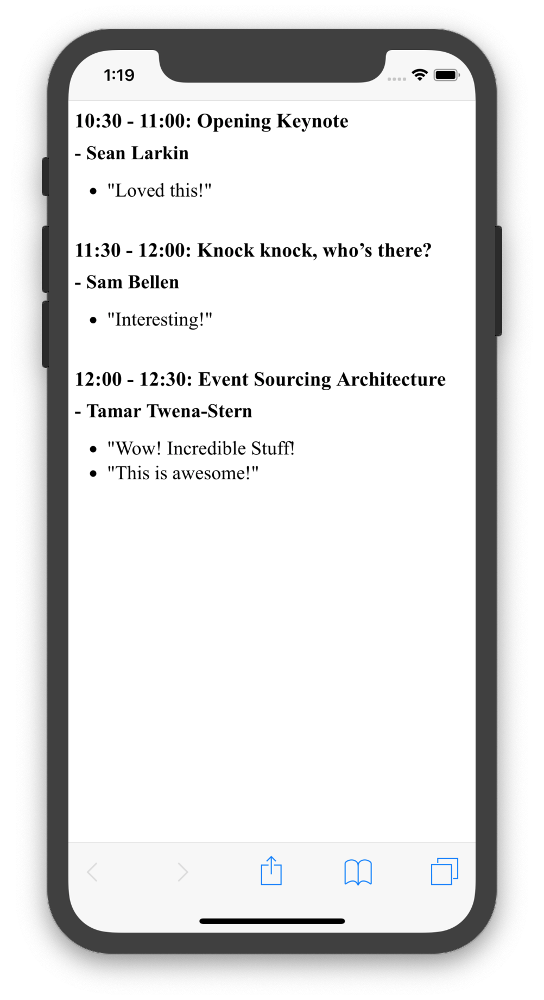
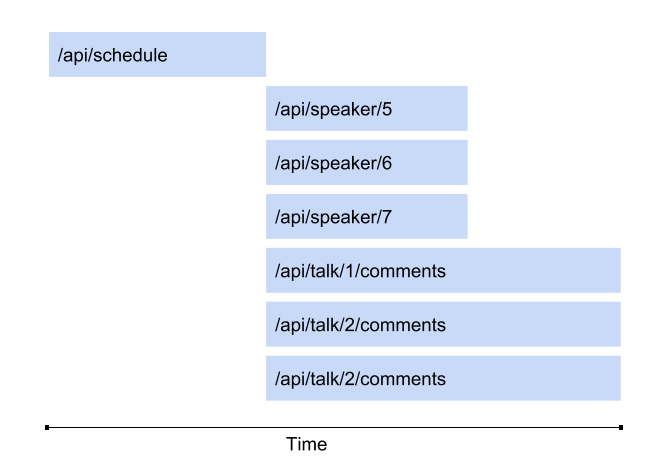
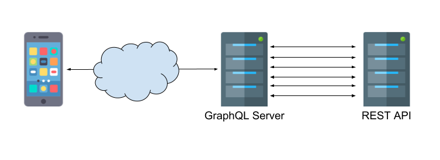
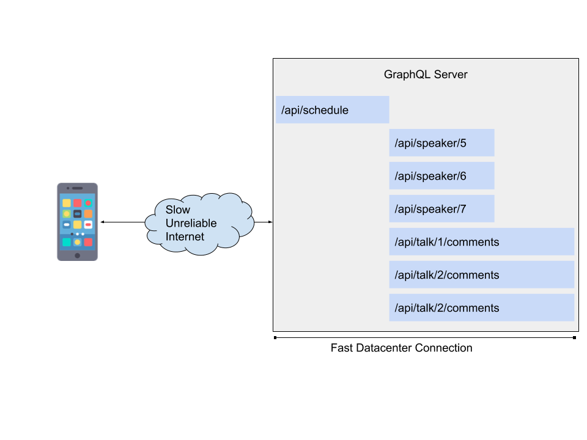
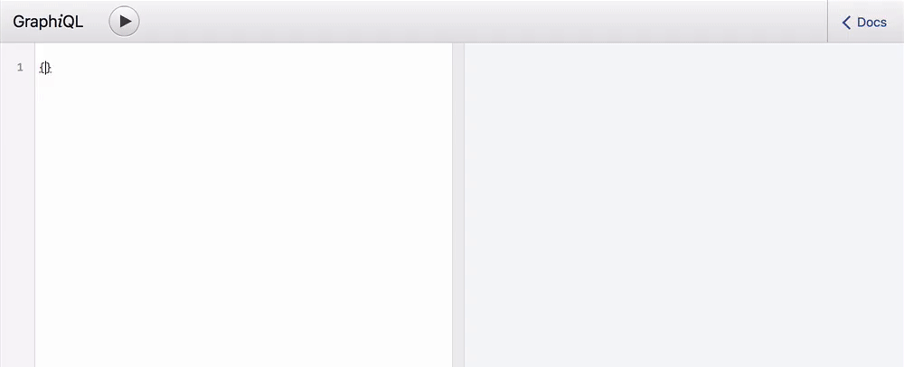
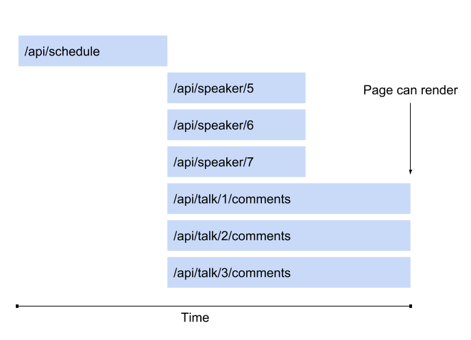
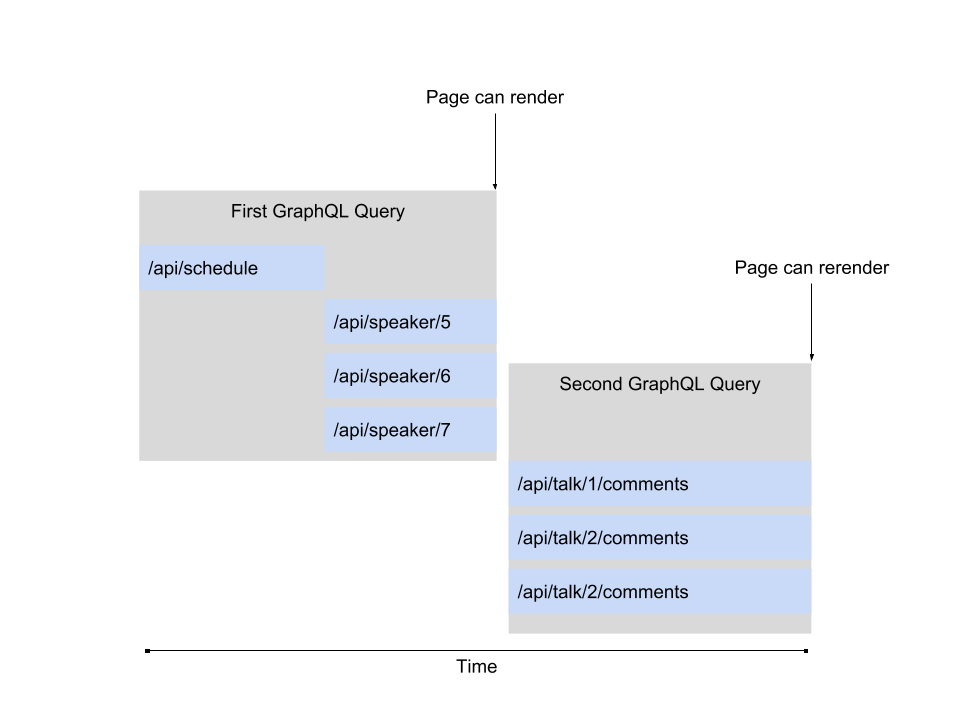
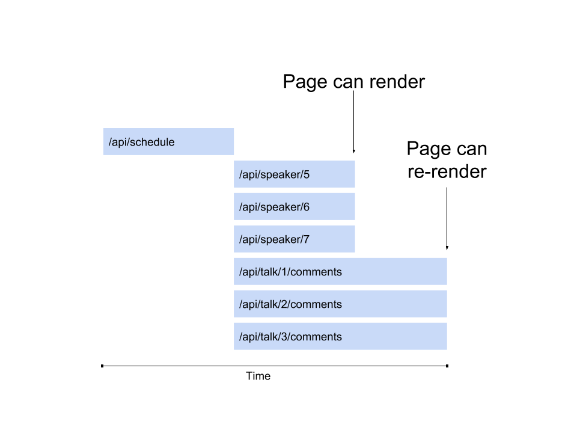
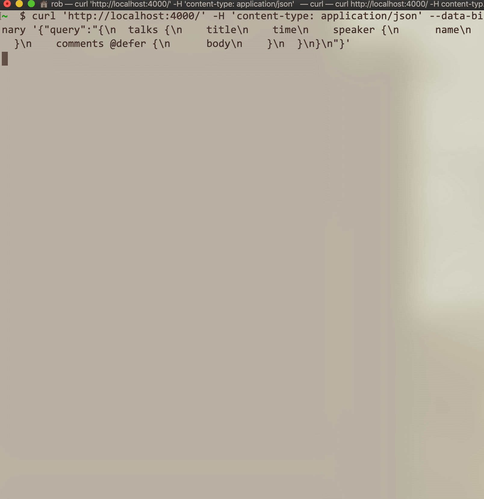

class: center, middle # Streaming HTTP and GraphQL ## Rob Richard ## Director, Front-End Engineering @ 1stdibs ??? * Hi! My name is Rob and I'm a Front-End Engineer @ 1stdibs. --- <image style="width: 122%;margin: -1em -4em;" src="./1stdibs.png"/> ??? * 1stdibs is an online marketplace for rare and desireable goods. We sell Furniture, Jewelry, Fashion, and Art. --- <div style="font-size: 40px; padding-bottom: 40px; text-align: center; font-family: 'Miller Display Light'">Shop the world's most beautiful things</div> * Front-End stack: Node, GraphQL, React, & Relay * Offices in New York and Vilnius, Lithuania ??? * Our front-end team is all-in on JavaScript. * Our stack is Node, GraphQL, React, & Relay. * We have offices in New York and Vilnius. * and we're hiring so definitely get in touch with me if this sounds interesting to you! --- ## What are the best ways to load data into an application? - Minimize transfer size - Minimize round trips ??? * This talk is about different ways of loading data in a web application and the trade offs involved. * Ideally we want to minimize the transfer size and the number of round trips before we can display something. --- # Example App .flex[ .column[  ] .column[ - A conference app with talks, speakers, and comments ] ] ??? * I'm going to use this simple app as an example. * It's displaying information about JSKongress. * It will list out the talks, speakers, and lets say you also have the ability to leave comments, so we'll display those too. --- # REST - Typically one resource per request - Could require multiple round trips or waterfalls for each resource ??? * The first option for building the API for this would be to use REST-like endpoints. * Typically you would create endpoints that return one resource per request. * Let's see what that looks like --- # Example App with REST .flex[ .column[ ] .column.codeLine[ `GET` `/api/talks/` .smallJson[ ```json [{ id: 1, time: "10:30-11:00", speakerId: 5, title: "Opening Keynote" }, ...] ``` ] <br> `GET` <code>/api/speaker/<span class="highlight">5</span></code> .smallJson[ ```json { id: 5, name: "Sean Larkin" } ``` ] <br> `GET` <code>/api/talk/<span class="highlight">1</span>/comments</code> .smallJson[ ```json [{ id: 9, body: "Loved this!" }, ...] ``` ] ] ] ??? * First we're going to load all the talks using the talks endpoint. * We can use the returned talkId and speakerId to make additional calls to the speaker endpoint and comments endpoint to get the rest of the data * You're going to have to write a bunch of code to coordinate these requests and make sure they are loaded in the correct order. --- # REST waterfall  ??? * The result of this is a "waterfall" of requests. * We can't start loading the speakers and the comments until the first request is finished. * After that we can make all of those requests in parallel. --- # GraphQL * A data query language * Developed by Facebook * Used internally since 2012 * Open source version published in July 2015 * Specification: https://facebook.github.io/graphql ??? * Let's talk about GraphQL now. * Show of hands, how many people are using GraphQL in production? * I'll give a brief overview in case you're not familiar * It's a language for querying data. * It was developed by Facebook to build their mobile apps * It's published as a specification, so there are now many server and client implementations as well as developer tools that all interoperate nicely. --- # GraphQL - Get many resources in a single request <br /> <blockquote> "GraphQL queries access not just the properties of one resource but also smoothly follow references between them. While typical REST APIs require loading from multiple URLs, GraphQL APIs get all the data your app needs in a single request. Apps using GraphQL can be quick even on slow mobile network connections." </blockquote> ## <center><cite>- graphql.org</cite></center> ??? * Here's a quote from the graphql website * "GraphQL queries access not just the properties of one resource but also smoothly follow references between them. While typical REST APIs require loading from multiple URLs, GraphQL APIs get all the data your app needs in a single request. Apps using GraphQL can be quick even on slow mobile network connections." * One of the main goals of GraphQL is to cut down on round trips. * It allows you to query for any amount of nested data in a single request --- # Example App with GraphQL .flex[ .column[ ] .column.codeLine[ `POST` `/api/graphql` <br /> REQUEST .smallJson[ ```graphql query { talks { title time speaker { name } comments { body } } } ``` ] ] .column.codeLine[ .smallJson[ <br /> <br /> RESPONSE <br /> ```json { "talks": [{ "title": "Opening Keynote", "time": "10:30-11:00", "speaker": { "name": "Sean Larkin" }, "comments": [{ "body": "Loved this!" }] }, ...] } ``` ] ] ] ??? * Let's see what this looks like for our conference app. * In GraphQL there is just one endpoint. Here it's /api/graphql. * The client sends a request with a GraphQL query to this endpoint * If you squint at it, a GraphQL request kind of looks like JSON, with only the keys * The GraphQL server will process this request and return actual JSON in the same shape as the GraphQL request * Since there's only one request we don't have to write code to coordinate sending the waterfall of REST requests. --- # GraphQL can wrap an existing API  ??? * It's pretty common to wrap a REST api with a GraphQL server. * It's a mostly low cost way to start getting the benefits of using GraphQL in your client code without having to rewrite your whole backend from scratch. --- # Why are fewer round trips faster? - Even if it’s same data speed - Even if you’re wrapping a REST api? ??? * The next question is, do you get any performance benefits by writing a GraphQL server, if all its doing is wrapping a REST api? --- # Why are fewer round trips faster? GraphQL server makes fast reliable network requests, same datacenter Trimmed down data is sent over slow, spotty internet .flex[  ] ??? * We're still making the same requests that the REST version of that app was making. * But it will be faster, because all of those round trips are happening over a fast datacenter connection. * Maybe they are even on the same physical server * If those REST endpoints returned additional data that was not part of the GraphQL query, it will be trimmed down to the slim graphql response * A single small efficient payload is what gets sent over slow unreliable public internet. --- # Every field is a function .flex[ .column[ ```graphql query ($first: Int!) { talks { speaker { * picture(size: 300) { width height url } } } } ``` ] .column[ ```json { "data": { "talks": [ { "speaker": { "picture": { "width": 300, "height": 300, "url": "http://..." } } }, ... ] } } ``` ] ] ??? * There's a few additional GraphQL features I want to talk about. * The first is that every field in GraphQL can be thought of as a function * Any field can take arguments * In this case I added a picture field on the speaker, which accepts a size argument * In your server implementation, you can write a function called a resolver to compute what the results of a field can be * This gives you a lot of flexibility in defining your API --- # Variables * Parameterize GraphQL Queries ```graphql query ($size: Int!) { talks { speaker { picture(size: $size) { width height url } } } } ``` ```json { "size": 30 } ``` ??? * The next GraphQL feature is variables. * This lets you define parameters that a GraphQL query can accept. * You can then send an additional JSON payload with the variable data --- # Fragments * Reusable bits of GraphQL ```graphql query { talks { title time speaker { name } ...Comments } } fragment Comments on Talk { comments { body } } ``` ??? * GraphQL also supports fragments. * Fragments are reusable portions of a GraphQL Query. * You can define a fragment and reuse it in multiple places in your query * You can think of it as a building block of a GraphQL query. --- # Directives * Uses the @ character * Can take arguments * @include and @skip built into GraphQL Specification * Experimental or framework specific features ```graphql query($showSpeaker: Boolean!) { talks { title time speaker @include(if: $showSpeaker) { name } } } ``` ??? * directives are these tokens you can add to almost any part of a GraphQL query * The spec defines two of them: include and skip. * Those let you conditionally request fields from a graphql query based on a variable value * Directives are also used for expermental or framework specific graphql features --- # Subscriptions * Allow real time updates * Modeled as an Observable ```graphql subscription { talks { title time speaker @include(if: $showSpeaker) { name } } } ``` ??? * GraphQL supports real time updates with subscriptions * In this case instead of a query response model, it's closer to an observable. * From one query you will receive multiple responses when the data changes * This is usually implemented with a technology like websockets --- # Developer tools * Type system and introspection capabilities enables powerful developer tools  ??? * GraphQL's built in type system and introspection makes it possible to build really powerful developer tools * You get context aware autocomplete and documentation right in your IDE. * This is a video of a tool called GraphiQL, which is an in-browser GraphQL IDE. * There's also editer plugins that give you the same features. --- # GraphQL experience * All these features give you a great user and developer experience. * 1stdibs has been using GraphQL successfully for over three years. * Growing ecosystem of libraries and tools ??? * All of these features add up to a great user and developer experience. * At 1stdibs we have been using GraphQL successfully for over three years. * And while you could build a lot of these features into REST apis, you wouldn't be able to take advantage of the ecosystem of existing GraphQL libraries and tools. --- # Can we optimize further? * Downsides to batching up all requests? * Your page loads as fast as its slowest piece of data.  ??? * But could we optimze GraphQL even more? * There are downsides to batching up all of your requests * Your page will load only as fast as its slowest piece of data --- # Solution: Multiple graphql queries Wait for first request to finish before second can begin  ??? * One solution is to just make multiple graphql queries * This is the most common approach to this issue. * You split your code up into multiple graphql queries and execute them as soon as you can * The downsides are you need to write code to coordinate these requests, similar to what we did with our REST requests * This will definitely speed up the schedule and the speakers, but now the comments are much slower, since it had to wait until both the schedule and speakers finished loading, * You could keep reworking this by splitting up your requests into even more graphql queries, but each time you do this you add more complexity to your code. --- # `@defer` directive - Experimental new GraphQL feature - Gives clients a way to add boundaries to graphql requests - Server can send results that are ready while the others are still loading - Client can begin rendering as data is received ??? * There's another approach to this problem * This is implemented as an experimental GraphQL directive called `@defer` * It allows the GraphQL server to send data as soon as its ready, without waiting until the entire request is completed. * Your client code can begin rendering as soon as it starts getting results from GraphQL * This lets you decide what is the most important thing to show your users and make sure it is not delayed by anything else. --- # `@defer` directive .flex[ .column.codeLine[ `POST` `/api/graphql` <br /> REQUEST .smallJson[ ```graphql query { talks { title time speaker { name } comments @defer { body } } } ``` ] ] .column.codeLine[ .smallJson[ <br /> <br /> Initial Response <br /> ```json { "data": { "talks": [{ "title": "Opening Keynote", "time": "10:30-11:00", "speaker": { "name": "Sean Larkin" }, "comments": null }, ...] } } ``` ] Deferred Response <br /> ```json // Patch for "comments", sent for each talk { "path": ["talks", 0, "comments"], "data": [{ "body": "Loved this!" }] } ``` ] ] ] ??? * This is what the @defer directive looks like in action * I noticed that it is slow to load comments in our app, so I've added the defer directive to that field. * And now there are multiple responses * In the first, the comments are null. This is sent as soon as the rest of the data is finished loading, before the comments are loaded. * Once the comments are loaded, a new response is sent. We call it a "patch" response since it is meant to be applied to the previous response. * The patch response contains a path array, indicating where in the initial response the data should be applied, as well as the actual data * You'll need a graphql client that understand how to piece these together. --- # Defer waterfall  ??? * Going back to our waterfall chart. * This one is exactly the same as the original GraphQL chart * But we are able to start rendering before the comments have finished loading * There is no overhead added because you don't need to send another request to the GraphQL server * Since we decided to only defer the comments, we do need to wait for the speakers to load before anything can be rendered. * but you have the choice of rendering earlier too. * It's a trade off of how fast you want the initial render to be, vs how many additional loading states you will have after that --- <img style="display: block; width: 75%; margin: 0 auto;" src="defer.gif" /> <small> <center> https://blog.apollographql.com/introducing-defer-in-apollo-server-f6797c4e9d6e </center> </small> ??? * This is a good example of what using @defer looks like to the end user * They're using multiple levels of @defer here, and data is incrementally rendered as its loaded * Compare it to the example without defer, where the whole page loads when exactly the last piece of data arrives. --- # When to use `@defer`? 1. Field is expensive to load. 2. Field is not on the critical path for interactivity. 3. Field is expensive to send. ??? * There's three cases where using @defer is super useful 1. When a field is expensive to load. Maybe it's data that's not cached, or data that requires a lot of computation, or just something that is expensive to look up. 2. When a field is not on the critical path for interactivity. Maybe it's the comments section of your app or something else that's not super critical. 3. When a field is expensive to send. Maybe it is not expensive to load this data, but there is just a lot of it. This will be slow to send over slow networks so it would be beneficial to defer it. --- # Implementation: HTTP Streaming * No websockets! * HTTP connection stays open until all data is received. * Multipart response like file uploads * Requires a client that can stream data * loop over data until enough bytes are read ??? * Now let's talk about how this is implemented * We're not using websockets here. We can accomplish this with less complex tools. * We're going to use a standard HTTP connection and send multiple JSON objects over it. * This single connection will stay open until all of the data is sent. * It's going to use a "multipart" http response. You may have seen something similar in file uploads. * We'll also need a client that can understand this response. --- # HTTP Streaming .test[ ```json --- Content-Type: application/json Content-Length: 590 { "data": { "talks": [{ "title": "Opening Keynote", "time": "10:30-11:00", "speaker": { "name": "Sean Larkin" }, "comments": null }, ...] } } --- Content-Type: application/json Content-Length: 140 { "path": ["talks", 0, "comments"], "data": [{ "body": "Loved this!" }] } ``` ] ??? * First let's take a closer look at what the multipart http response looks like. * Instead of a single request returning a single JSON object, we have multiple JSON objects. * Each "part" of the multipart response contains a header, indicating the content type. This format allows mixed types, but we're only going to use JSON here. * There's also a content-length header. This lets our parser know how many bytes to read before it can begin parsing the json. * After the initial data is sent, the connection will remain open until each patch is sent. ---  ??? * This is what it looks like when you make this request on the command line with curl. * You can see how each of the JSON objects are sent over the same connection. * They're sent as soon as the data is ready * and the connection is closed after the last one is sent. --- # Standard GraphQL Network Layer GraphQL Request => Promise<JSON Response> .bigCode[ ```javascript function fetchGraphQL(query) { return fetch('/api/graphql', { headers: { 'content-type': 'application/json' }, body: JSON.stringify({query}) }).then(response => { return response.json(); }) } ``` ] ??? * So here's an example of a standard GraphQL Network Layer * A network layer is just a function you write that has the logic to communicate with your GraphQL server * This one is pretty straight forward. All it does is make an HTTP request to the GraphQL server and return the results. * This will work for the standard GraphQL use cases but it needs to be more complex to handle the defer directive. --- # Streaming GraphQL Network Layer Use Readable Streams api to read bytes as they are recieved. GraphQL Request => Observable<JSON Response> Similar to GraphQL Subscriptions .bigCode[ ```javascript function fetchGraphQL({query, onNext, onComplete}) { return fetch('/api/graphql', { headers: { 'content-type': 'application/json' }, body: JSON.stringify({query}) }).then(response => { const textDecoder = new TextDecoder(); const patchResolver = new PatchResolver(r => onNext(r)); * reader.read().then(function sendNext({ value, done }) { if (!done) { const plaintext = textDecoder.decode(value); patchResolver.handleChunk(plaintext); * reader.read().then(sendNext); } else { onComplete(); } }); }) } ``` ] ??? * Now in this example we've updated the network layer to support streaming connections. * First thing, we changed the interface to act like an obversable instead of returning a Promise. * This function will call `onNext` each time we have a new fully constructed JSON object. * It will call onComplete after the network connection is closed, meaning all of the patches have been received. * This is a similar model to GraphQL Subscriptions, From one request, there are many payloads. * We're using the Readable Streams API to read the network data. This is a new browser api built ontop of `fetch` * It allows you to set up a "reader" which will call a callback as soon as some bytes are received from the network connection. * We'll need a custom object that I called "PatchResolver" * This object has a method that we can call with some bytes everytime they arrive on the network connection. * When it has enough bytes to read a full json object, it will call the onNext callback. --- # Browser Support? * ReadableStream API * ✅ Chrome * ✅ Firefox >= v65 (very recent) * ✅ Safari >= v10 * ✅ Edge * ❌ Internet Explorer ??? * You may be wondering what the browser support is for the Readable Stream API. * It's actually pretty good. * It's supported in all recent versions of evergreen browsers. Firefox was the most recent one, adding support in January of this year. * And I don't think anyone here is surpised that it's not supported in Internet Explorer. --- # Use XMLHttpRequest as a fallback .bigCode[ Works in all browsers ```javascript function fetchGraphQLXHR({query, onNext, onComplete}) { const xhr = new XMLHttpRequest(); let index = 0; const patchResolver = new PatchResolver(r => onNext(r)); function onReadyStateChange() { if (this.readyState === this.DONE) { onComplete(); } else { const chunk = xhr.response.substr(index); patchResolver.handleChunk(chunk); index = xhr.responseText.length; } } xhr.addEventListener('readystatechange', onReadyStateChange); xhr.send(JSON.stringify({query})); } ``` ] ??? * But we don't actually need Readable Streams to make this work! * XMLHttpRequest allows you to stream data. * This has been around since about Internet Explorer 7 * This technique has not been used all that often, but I think it's pretty cool that its been widely supported for so long. * In the code example here, the `onReadyStateChange` callback lets us read the current data as it's been loaded and we can handle it in exactly the same way. --- # Open source implementation * Included in apollo-client alpha * github.com/relay-tools/fetch-multipart-graphql/ * Contains code to fetch and parse MultiPart HTML Response ??? * You probably don't want to write this stuff all by hand. * I also left out error handling to keep the examples clean. * The good news is that Apollo Client (which is one of the most popular graphql clients) includes this in an alpha version. * I also wrote an open source library called "fetch-multipart-graphql", if you want to use this without apollo. --- # Why is this field `null`? .flex[ .column[ because it's `null`? or because it's loading? ] .column.codeLine[ .smallJson[ Initial Response <br /> ```json { "data": { "talks": [{ "title": "Opening Keynote", "time": "10:30-11:00", "speaker": { "name": "Sean Larkin" }, * "comments": null }, ...] } } ``` ] Deferred Response <br /> ```json // Patch for "comments" { "path": ["talks", 0, "comments"], "data": [{ "body": "Loved this!" }] } ``` ] ] ??? * You may have noticed that when the initial response is returned, the deferred parts are null. * That could be problematic when you are writing your UI code to display this data. * Is it null because it's actually a null result, or is it null because the patch with the data hasn't been loaded yet? * Basically, the question is, should you render "no comments" or a loading spinner? --- # Apollo Client Supports `@defer` in alpha build Provides `loadingState` prop to distinguish between pending and `null`. ```jsx <Query query={query}> {({ loading, data, loadingState }) => { if (loading) { // entire query not yet loaded return <div>loading...</div>; } return ( <React.Fragment> <h1>{data.talk.title}</h1> <h3>Comments</h3> {loadingState.talk.comments ? <div>loading...</div> : <ul> {data.talk.comments.map(({body}) => ( <li>{body}</li> ))} </ul> } </React.Fragment> ); }} </Query> ``` ??? * This is where a GraphQL client will come in handy. * As I mentioned before, Apollo Client has experimental support for the defer directive in an alpha release * These examples are React but this could work with any framework. * They will help you solve this problem by passing a loading state object of all the deferred fields that are currently loading. * You can use this object to ensure your loading states are handled correctly. --- # Relay * Doesn't currently support @defer directly * Does support observables, so it can work with the previous code example * Experimental support in early development by the Relay team. ??? * Relay is another popular GraphQL client. * It was open sourced by Facebook shortly after the GraphQL spec was released. * It's what we use at 1stdibs. * Relay currently doesn't support the @defer directive. * But it does support subscriptions and observables. * So we can use the network code I showed before, but we won't be able to solve the null or loading problem until proper support is added. * The Relay team is working on support for this. --- # Relay Relay's strength is combining GraphQL Fragments with React Components ```jsx function Commments({talk}) { return ( <ul> {talk.comments.map(({body}) => ( <li>{body}</li> ))} </ul> ) } export default createFragmentContainer(Comments, { talk: graphql` fragment Comments on Talk { comments { body } } ` }) ``` ??? * Before we get into how defer might work with Relay, I want to show how Relay combines GraphQL fragments with React Components. * You colocate a fragment with a component and then that component has access to the fields defined in the fragment. * Each component actually only has access to the fields defined in the fragment for that component. * This give you a high level of confidence when you are making changes to the fragment. --- # Deferred fragments and React Suspense are a perfect fit. ```jsx function Talk({talk}) { return ( <React.Fragment> <h1>{talk.title}</h1> <h3>Comments</h3> * <React.Suspense fallback={<div>loading...</div>} * <Comments talk={talk} /> * </React.Suspense> </React.Fragment> ) } export default createFragmentContainer(Comments, { talk: graphql` fragment Talk on Talk { title * ...Comments @defer } ` }) ``` ??? * You may have also heard about a new React feature that's in the works called Suspense. * It lets components halt rendering until all the data they require is loaded. * React will render the closest fallback until the component is ready. * This is a perfect fit for colocated components and the @defer directive. * This example is a hypothetical approach that relay could take to supporting `@defer` * You could defer an entire graphql fragment, and react can suspend until the patch is received. * Then you don't have to worry about handling null data, since your component won't be rendered until it's done loading. --- # `@stream` directive * Similar to @defer, but for lists * Will load each element of the list as it is ready * Show users the first item in the list without waiting for the whole list ??? * There's also been some experiments with another directive that can take advantage of the HTTP streaming architechture. * This one is called "stream". * It's useful on lists of items. * It will allow you to start rendering the first item in the list before the rest of them have finished loading. * On small screens you might only have room to render the first one or two items, so it's nice to see it without waiting for the entire list to load. --- # `@stream` directive .flex[ .column.codeLine[ REQUEST .smallJson[ ```graphql query { talks @stream { title time speaker { name } } } ``` ] ] .column.codeLine[ .smallJson[ ```json // Initial Response { "data": { "talks": [] } } ``` ] .smallJson[ ```json // Patch for first talk { "path": ["talks", 0], "data": { "title": "Opening Keynote", "time": "10:30-11:00", "speaker": { "name": "Sean Larkin" } } } ``` .smallJson[ ```json // Patch for second talk { "path": ["talks", 1], "data": { "title": "Knock knock, who’s there?", "time": "11:30-12:00", "speaker": { "name": "Sam Bellen" } } } ``` ] ] ] ] ??? * This is what a response using the stream directive will look like * We're going to stream each of the talks * So instead of getting the whole list in one response, we get an empty array first. * Then a patch response is sent for each object in the list * And of course you can use both the defer directive and the stream directive in the same query --- # Current Status - @defer * Implemented in Apollo Server and Apollo Client alphas * Currently usable in Relay, can't distinguish between loading and null states * WIP by Relay team ??? * So to summarize the current status. * defer is available in Apollo alphas * It's usable in Relay, but without a solution for the issue of distinguishing loading and null states * The Relay team is working on adding support --- # Current Status - @stream * More experimental * Not supported in Relay or Apollo ??? * @stream is even more experimental and not supported in either Relay or Apollo --- # HTTP Streaming Architechture * Widely supported since IE 7 * Has applications outside of GraphQL ??? * HTTP Streaming Architechture, what this is all based on, is widely supported by browsers. * I think it's very useful, but not widely used in front end applications. * It think the community can get very creative designing applications that make use of this architecture, even without GraphQL. --- # More Info * Lee Byron - GraphQL Future at React Europe 2016 * https://www.youtube.com/watch?v=ViXL0YQnioU * Apollo Blog - Introducing @defer in Apollo Server * https://blog.apollographql.com/introducing-defer-in-apollo-server-f6797c4e9d6e * These slides * https://robrichard.net/jskongress-2019/ ??? * I put a few references here. * Lee Byron, one of the GraphQL co-creators did a great talk where the ideas behind @defer and @stream were first discussed * And the Apollo blog also has a great article on defer --- # That's all! * https://www.1stdibs.com * twitter: @rob_richard * github: @robrichard ??? * That's all! * Thank you so much!